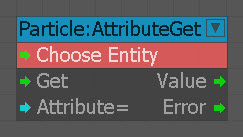
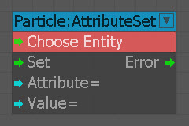

AttributeGet
Возвращает значение указанного атрибута.

| Ввод | Описание |
|---|---|
| Получить | Запускает узел. |
| Атрибут | Имя атрибута, из которого будет взято значение. Имена чувствительны к регистру, пожалуйста, убедитесь, что вводите имена правильно. |
| Выход | Описание |
| Значение | Выводит значение, полученное из атрибута, определенного во входных данных атрибута. |
| Ошибка | Выводит, когда возникает ошибка при получении значения атрибута. |
AttributeSet
Изменяет значение указанного Атрибута.

| Ввод | Описание |
|---|---|
| Установить | Запускает узел. |
| Атрибут | Имя атрибута, значение которого необходимо изменить. Имена чувствительны к регистру, пожалуйста, убедитесь, что вводите имена правильно. |
| Значение | Новое значение, которому будет присвоено значение атрибута. |
| Выход | Описание |
| Ошибка | Выводит, когда возникает ошибка при изменении значения Атрибута. |